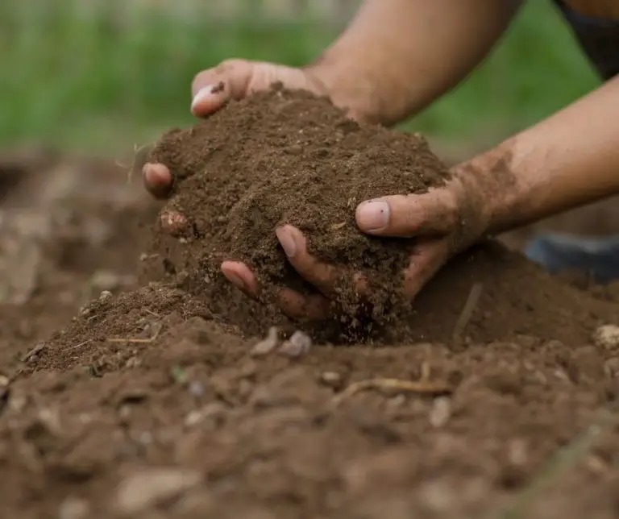
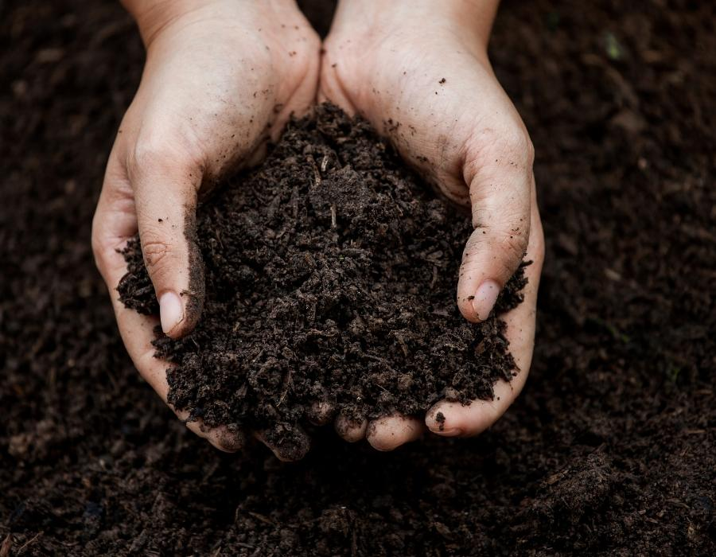
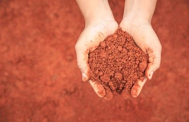
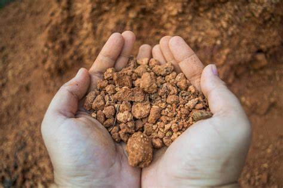
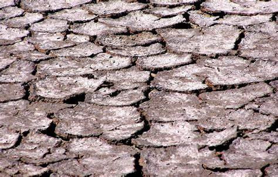
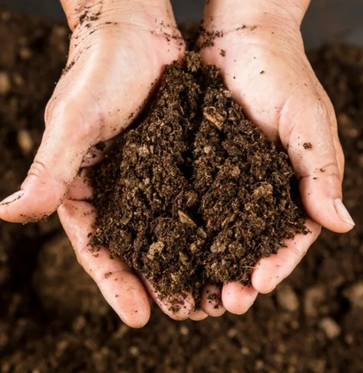
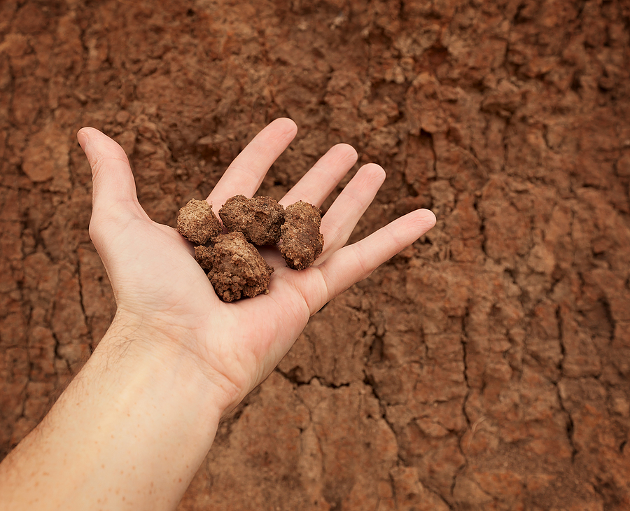
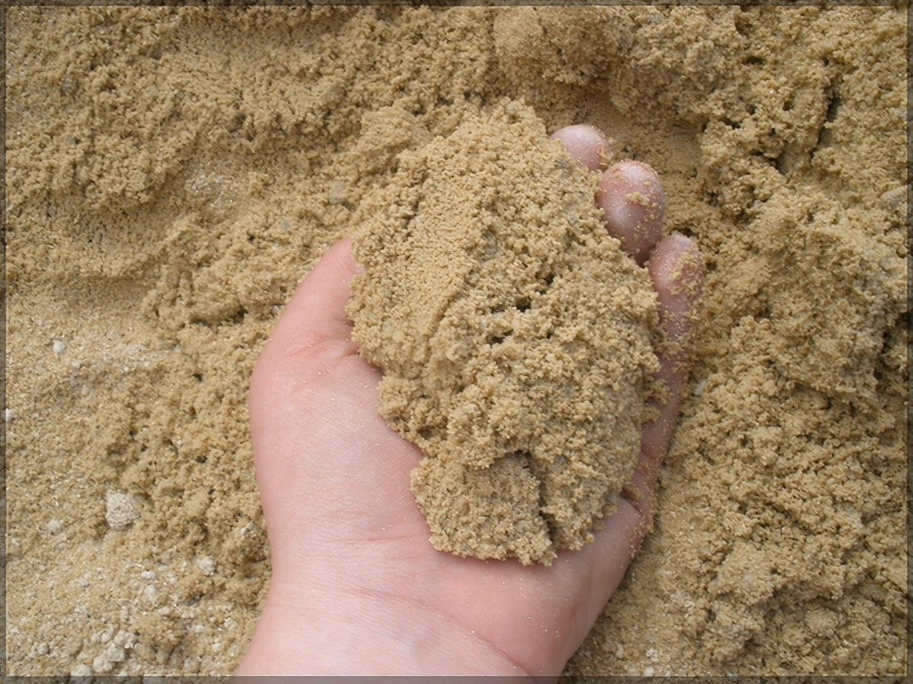

Soils vary greatly in their chemical and physical properties. Processes such as leaching, weathering, and microbial activity combine to make a whole range of different soil types. Good soil structure contributes to soil and plant health allowing water and air movement into and through the soil profile. Soil testing is done to determine the properties of soil. After knowing the soil, proper management practices should be carried out to overcome the soil stress such that yield can be maximized.

ALLUVIAL SOIL
Practice a systematic rotation of crops to prevent nutrient depletion and minimize the risk of pests and diseases specific to certain plants, promoting overall soil health in alluvial areas.
Efficiently manage irrigation to avoid waterlogging or drought stress, as both extremes can adversely affect alluvial soil. Proper drainage systems and judicious water application contribute to soil stability and fertility.

BLACK COTTON SOIL
Improve aeration by incorporating organic matter like compost and employing deep ploughing techniques, which helps prevent compaction in black cotton soil, ensuring better root growth and nutrient uptake.
Apply a layer of organic mulch on the soil surface to reduce moisture evaporation, control temperature fluctuations, and minimize soil erosion. Mulching also aids in weed suppression and enhances the overall moisture retention capacity of black cotton soil.

RED & YELLOW SOIL
Maintenance: Red soil is often rich in iron and minerals but may lack nitrogen and organic matter. Regularly supplement it with organic fertilizers to improve nutrient levels and enhance soil fertility.
Red soil can be prone to erosion, especially during heavy rains. Implement erosion control measures such as mulching or planting cover crops to prevent soil loss and maintain its structure.

LATERITE SOIL
Utilize cover crops to protect laterite soil from erosion and to enhance its fertility. The cover crops help in retaining moisture, preventing leaching of nutrients, and adding organic matter to improve soil structure.
Implement careful nutrient management by adding appropriate fertilizers based on soil testing. Laterite soil tends to be nutrient-poor, so supplementing with essential nutrients helps sustain plant growth and productivity

SALINE & ALKALINE SOIL
Implement leaching practices to flush excess salts from the soil. Adequate irrigation with good drainage helps in removing accumulated salts, preventing soil salinity in saline and alkaline soils.
Incorporate organic matter, such as well-rotted compost, into saline and alkaline soils. Organic matter helps improve soil structure, water retention, and provides essential nutrients, making the soil more conducive for plant growth while mitigating alkalinity.

PEATY & MARSHY SOIL
Install effective drainage systems to address excess water retention in peaty and marshy soils. This helps prevent waterlogging, promotes aeration, and creates more favorable conditions for plant roots.
Implement practices such as periodic cultivation and the addition of coarse materials to enhance soil aeration. Improved aeration supports microbial activity, prevents anaerobic conditions, and fosters a healthier environment for plants in peaty and marshy soils.

CLAY
Maintenance: Clay soil tends to compact easily, leading to poor drainage. To improve it, incorporate organic matter like compost to enhance drainage and aeration.
Additional Tip: Avoid working with clay soil when it's too wet, as it can exacerbate compaction.

SANDY
Maintenance: Sandy soil drains quickly and lacks nutrients. Regularly add organic amendments, such as well-rotted compost, to improve water retention and nutrient content.
Additional Tip: Mulching helps retain moisture in sandy soil, reducing the need for frequent watering.